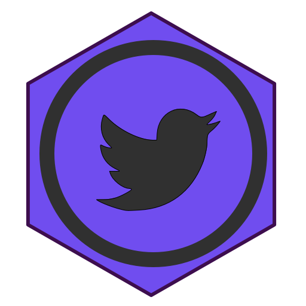
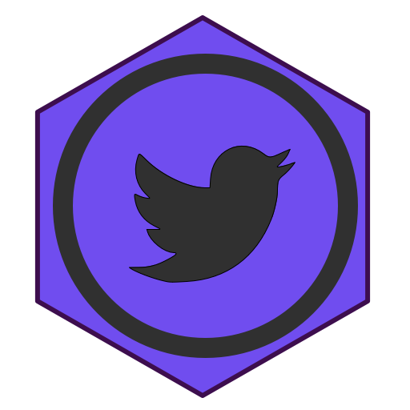

I know, the bee is silly, but that's part of who I am. I love whimsy.
If she is driving you crazy, click here to send her home.
Hi!
My Name's Colette,
and I want to work with you!
What do you need?
Because I can probably do that.
My passion is people. I have spent my life experimenting and exploring the world and ways of living, and working. There has been one consistent thread through it all: People. Helping people.
I want to help people be the best they can be.
I want to help people find where they belong in the world
I want to make the world better.
And what I have is a series of skills, varied and useful, which can be combined for the best use.
The (mostly complete) Resume of One Colette Isabella Taylor
Rollover to see tech-specific items.
Education:
General Assembly, I took the Front-End Dev course, focusing on HTML, CSS, and Javascript
Code Fellows Boot Camp on Ruby on Rails, and I have continued my education by spending every minute I have, learning everything I can about data structure, and making better Apps.
B.A. in M.C.D. Biology University of Colorado in Boulder
Graduated: May 2011
Coding Languages: HTML, CSS, Javascript, Ruby on Rails
Volunteer Work:
* GeekGirlCon: June 2015-Present - As GeekGirlConnections Manager, I organize exhibitors and panels for the Connections Room at the Con. I also organize volunteers, events, and help design the intention of our outreach programs.
* AlternaCoders, The Seattle Attic Community Center : January 2015-Present -Weekly coding workshop, focusing on the interests of The Attic Community.
* The Seattle Attic Community Center, BOD: June 2015-Present Helping to run a feminist, lgbt focused Community Makerspace.
* ADA Developer's Academy : 2014 Helped with developing the pioneering women’s coding class and internship opportunity group as a TA and curriculum designer.
* PAX, GeekGirlCon, ECCC, Various: 2014-Present Puzzle solver, manager and problem preventer.
* Code Fellows, TA: 2013 Helped to run a Code Camp for at-risk youth and women in South Seattle. Helped to develop a 2 month long nightly introductory course for Ruby on Rails.
* Rails Bridge TA: Monthly in 2014 We teach women the basics of Ruby on Rails in one weekend.
* Geek Girls, Co-organizer, Speaker: 2014 Helped to bring the popular Polish women’s organization over to the US, editing translations, lining up speakers, and helping to co-organize meetings.
Other Work:
Seattle Start Up Weekend, 2013 I participated as a Dev, and helped to build an application called Legit, which we designed to help Freelancers to fill out the paperwork to become a legitimate business. We focused on the requests of our customers, making sure our design filled the requirements of our target market.
Seattle Start Up Weekend Euro , 2013 I pitched and pursued my interest in a mental health game for geeks.We created Zarkadan: He’s your self-help monster, a gamification-style guide for geeks. More to come as we finish the art work and coding. For more of my recent work, and code samples, see my github page
Anatomy of a Beekeeper , From January 2011 to Current Once ran: etsy.com/shop/coletteisabella Now coletteisabella.com I ran an Etsy shop with jewelry and other crafts I make inspired by Molecular Biology. I was featured on boingboing.net’s Christmas gift guide in 2012. Now I sell special request pieces from my website.
Boulder County Bombers
From November 2011 to June 2012
Took a year off to help found and establish the first roller derby team in Boulder, Colorado. Acted as Secretary for that time, and played in several games as well as putting on our first home team bout. I got very good at working in a very intense team situation, and dealing with heavy bureaucratic procedures required for a high impact sport.
Research Assistant in Doctor Jennifer Martin’s lab
Supervisor: Dr. Jennifer Martin and Dr. Ryan Takeshita
CU Boulder From August 2009 to May 2011
Experience with: PCR, human and bacterial Cell Culture, sterile technique, cloning, Western blot analysis, gel electrophoresis, centrifugation, mini and maxi preparations, protein analysis, plating, and quite a bit more.
Teacher’s Assistant, and lab teacher for Introduction to MCDB
Supervisor: Dr. Nancy Guild and Megan Greening
CU Boulder From August 2010 to January 2011 and again August 2011 to January 2012
I taught two weekly sections of the course, instructing and organizing lab activities for Freshmen college students. I wrote my own lectures and quizzes for each week, I held weekly study sessions, and proctored the lecture tests, as well as helping to write and proof read the tests.
 
